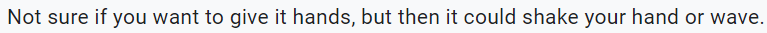

Design Process
The Start:
Starting out, our goal was to use interactions that allowed users to stop robot from sassing while also inducing guilt in user. So, while brainstorming we used robot’s body and disabling parts of it as our input interactions. Each interaction stopped a particular functionality of robot and hence stopped the sassing of robot. Being cruel interactions, we hoped to guilt the users and make them self-reflect.
*Initial Interactions*
While the above interactions fulfilled our purposes, it was quickly realised through feedback from teachers and colleagues that the interactions can be easily mistaken as torture, which we didn’t want considering teens as potential users. Therefore, we moved forward dropping these interactions and moving onto research for inspiration. The idea of manipulating body parts was still intact.
Research:
While researching, my goal was to look into existing robots with personality and observe how they engage with the users. Observing social robot Sophia and assistant robot Olly, it was noted that these robot takes user’s emotions as their inputs and use it change themselves. This what intrigued people, their ability to change according to user. This was useful as I got the idea of using user's anger as the input interactions. It would great for robot to change itself based on how user treats it and progress it's behaviour/personality based on it. Combining the manipulation of body to stop particular functionality of robot and inputting anger as interaction, I came up with four new interactions that resembled previous interactions but had meaning for each interaction. Two of interactions were used to input passive anger for people who are passive and the other two interactions were more confronting/aggressive. Volume Control and Block View interactions are passive whereas Ear Pull and Shaking interactions are aggressive.
*New Interactions*
I had laid down a base for the input interactions but wasn't sure if this made sense to the user's and whether the interactions were successful in guilting them so, testing was conducted to explore this.
Testing:
In the penultimate stage of design, a test was conducted to further grasp the concept from user’s viewpoint and verify if they understood the concept. The test was conducted in a form of survey where questions revolved around exploring the concept. Survey results can be viewed here. The main takeaways from survey were –
-
Alongside interactions that takes in user’s anger, there should also be positive interactions that balance out the negative. These interactions also gives users chance to redeem and correct their mistakes

It is explicit from answers above that testers were trying to include positive interactions.
-
Reactions should be added where robot retaliates to the use of interactions. The reactions would be helpful to indicate to user's that using interactions makes robot unhappy/angry.
Tester's reply indicates that robot should express it's discomfort.
Following the results, two features were added to the robot -
-
A positive interaction where user can tap on robot's head to make it happy. This interaction stops the robot and make it happy but requires more effort since user has to continuously do it. Here, we give user chance to choose between their comfort or robot's mood.
-
Smile and frown given to robot as reactions. The mouth region now shows the mood of the robot when an interaction is used.
After testing, we were looking forward to protoype demonstration where we shared our prototype with class mates.
Prototye Demonstration:
The final stage of concept development consisted of building a physical prototype to get feedback from fellow students. All the features aforementioned were implemented in the prototype and displayed to students in the an explainer video. Video was used to show prototype because of COVID-19 restrictions. A complementing document was also provided to students in order to further their understanding of concept. The document can be read here. The document contains problem space, design process, interaction plan and success criteria.
*Prototype developed and sensors used*
After the video was reviwed by class mates, we were given appraisals about our concept. Main takeways from appraisals were -
The positive interactions present made sense but there should be more. The positive interactions helps better user's control over robot's personality.
Smile and frown works well to provide anthropomorphic feedback and give users emotional connection to robot. Similar features can be added that help with guilting the users.
Considering the appraisals, two changes were made to concept and protoype.
-
Two interactions were modified, blinding robot and scolding. If robot is kept in sunlight, this would be a positive interaction where robot will get good light, opposite to when robot is blinded. Users can also massage the ears of robot to make it happy. The modification of two existing interactions would act as the positive interactions.
-
Led effects were added to smile and frown. The effects shows emotional changes to the state of robot. For example, as volume is lowered the smile of robot turns to frown one led at a time, similar to how volume bar is reduced. Led effects are also explained in Input Interactions section.
Final Build:
For the final build, leds were taken away and neopixel strips were used to get the desired led effects. Neopixel rings also gave robot proper smile and frown as compared to the prototype build. An eyebrow was also added above the eye of robot to give the robot human characteristics and make users sympathise with it. This addition goes along with anthropomorphism of robot. The arduino code was rewritten to work with the positive interactions and neopixel strips. Other teammate's individual aspect was also combined with my build, which enables the robot to talk when it is angry and when positive interaction is used.
*Finished Product*
For the final deliverable, the build above was combined with each team memeber's individual aspects. Here we bought together the audio feedback and visual hacking together in one code. A demo of final product can be seen in the video below -
Reflection on project outcomes
Overall, I am contented with the project and what it delivers. Concept development, design process and bringing everything together was a wonderful experience. The ideal concept and actual project aren’t very far away. The ideal concept promises user some features that couldn’t be delivered in the final product. With the availability of time, I would have liked to include some more effects similar to smile and frown, like moving ears. Currently, the robot has the ability to process an interaction but due to lack of time and resources, it can't take action like turning off TV or stop Roomba. For example, the robot can input when it’s view is blocked but the robot can’t stop moving (something the concept promises) because the team couldn’t get the Roomba working properly with robot though it was tried by Tim. These minute details are present in interaction’s concept but not in the final build.
The project in itself delivers well on it’s domain of Sassy Tech where the robot acts as sass machine. The robot being able to deliver sass through various mediums such as talk & device control and it’s ability to respond to sass based on user’s action fits perfectly within Sassy Tech. The underlying problem we are trying to resolve about people overusing screens is also tackled well by concept. A weak point of the concept is that it doesn’t have a proper background research present which explains the theory behind behaviour change and motivation. If the robot is there a person’s screen time may be reduced but there’s no guarantee that this change would be a long-term effect. This is something I wish we had explored more. In the overall studio theme of playful and open-ended interactions for everyday life, the robot can be easily seen as something user interacts daily and has fun interacting with it in various ways present. The interactions are playful in sense that they allow users to interact and responds to the user interaction through reactions and different mediums. I think we covered this area pretty well. The robot is intended to be for everyday usage but I personally think our concept here can improve. We haven't thought well about when the robot stays active and how long it stays active. Also, there is no mention about usage of product when user complies to it and stop watching the TV. These are some further considerations I would explore if given more time and resources. To conclude, the concept ticks all the required points but still some minor changes can be made.
Online Exhibit:
Online exhibit was a wonderful experience which bought some further insights into the concept and what it can become. Overall, the concept had positive feedback where viewers actively engaged with what the concept meant and what features it could include. It was great to see that visitors ask questions about the interactions and derive emotional connection to robot, which was one of the success criterias. We would have loved to measure other criterias as well where we would measure if the robot actually reduced screen time but those required prolonged usage which was not possible in an online exhibit. We also had some trouble with failing parts during the exhibit and individual aspects not coming like we expected so, we had to roll back to individual components working independently. We simulated the individual parts and made them look like one so viewer's experience doesn't get degrade. The cause of failing parts was that all individual parts were connected to one voltage that started smoking after working for a bit. We should have anticipated this and prepared for any last minute failures. Seeing the overall reactions, I would say the prototype worked and we took the right approach towards the problem space. Some feedback we got on the broader concept relates to how concept can further develop to become a personal assitant and it would botch up it's tasks as sass expression. It would be a great direction to explore more sassy ways to annoy users. Overall, the visitors were interested in the product and contented with it's interactions.